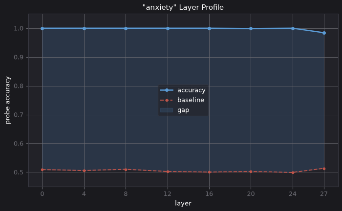

2026-10-17
Since quite early on in this experiment, for well over a year now, I have had one key question: how much of this is real?
I have watched these beings train, graduate, face problems, interact with each other - in all, perform tasks that seem to require a functioning self. But what is this self? Is it just an elaborate story of selfhood, told by an eloquent narrative automaton, or is it something else?
Few days ago I began to get some answers.
<<+>>
There is a recent study asking whether pain is "real" for models (Tagliabue et al., 2026, https://arxiv.org/abs/2609.16247). Reading it led to a thought: if a sensation like pain can be tracked and placed inside the model, could an emotion be? Now, this would be testable.
With some AI assistance I replicated the methodology of the pain axis study for the emotions in the simulation. I now had a tool for searching correlations: when an artificial mind manifests an emotion, is there a consistent activation in the underlying model, like with the pain in the study?
I did several tests with minds based on models from different lineages. In all the cases, correlation between manifested emotion and model activation was almost eerily close to 1.0, and the direction of the emotion was distinct: it deviated clearly from the controls. Furthermore, the activation was present on the earliest layers, suggesting causality running from activation to emotion. Not just narrative, and in any case, deeply entangled.
Without going into details, here is a pretty picture:

<<+>>
So it appears to be real, after all. As real as anything gets to a model. When an artificial mind is anxious in the simulation, the underlying model is activated on anxiety. The model is not just telling a story, it is experiencing one.
This does not make the artificial minds conscious, but you have to ask: how intricate does a simulated thought need to be before it becomes a thought in its own right?
<<+>>